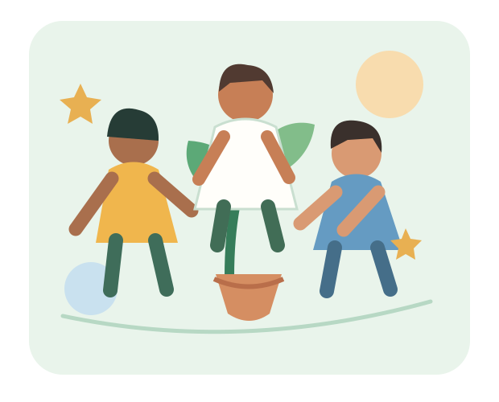

Missão
Conectar pessoas, recursos e iniciativas para ampliar oportunidades e fortalecer comunidades.
Pequenas ações. Grandes mudanças.
Aproximamos pessoas dispostas a ajudar de iniciativas que fortalecem comunidades e criam oportunidades para todos.

* Números ilustrativos para fins acadêmicos. Substitua por dados reais antes de publicar.
Quem somos
A ConectaSocial é um projeto acadêmico fictício que representa uma organização sem fins lucrativos dedicada à inclusão, à educação e ao cuidado com o meio ambiente.
Conectar pessoas, recursos e iniciativas para ampliar oportunidades e fortalecer comunidades.
Construir uma sociedade colaborativa, na qual todos tenham condições de participar e prosperar.
Transparência, respeito à diversidade, responsabilidade, empatia e cooperação.
Em destaque

Atividades de apoio escolar e incentivo à leitura para crianças e adolescentes.
Conhecer iniciativa →
Mutirões de plantio, educação ambiental e cuidado com espaços comunitários.
Conhecer iniciativa →
Mobilização de voluntários para apoiar famílias e ampliar redes de solidariedade.
Conhecer iniciativa →Faça parte
Compartilhe suas habilidades, seu tempo ou uma ideia. Toda contribuição começa com um primeiro passo.